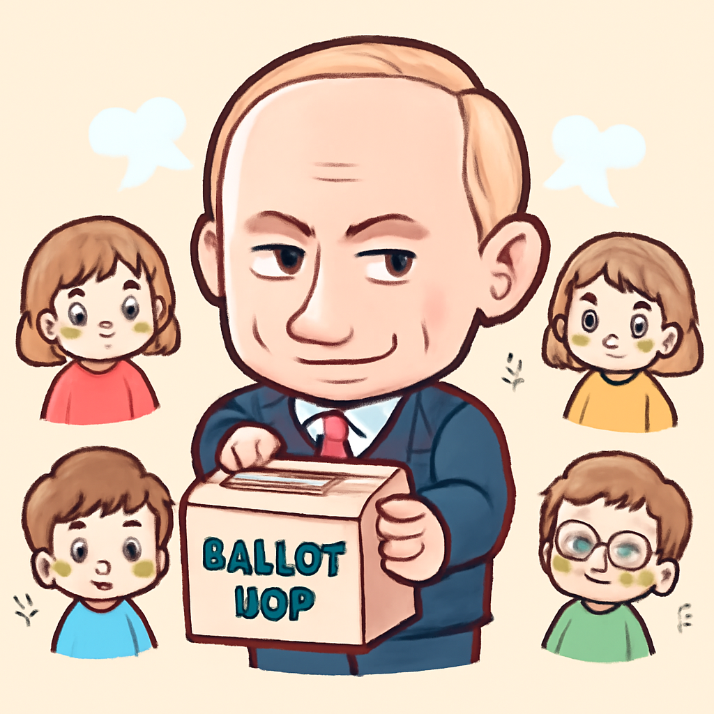

其一 · 也門 · 胡塞武裝與沙國勢力戰火再起
也門胡塞武裝戰事升級，民眾逃往吉布提
在也門，胡塞武裝與沙烏地阿拉伯支持的軍隊再次爆發激烈衝突，許多民眾冒著生命危險，越過紅海逃往吉布提。這場戰爭的加劇不僅影響到當地人民的生活，還可能擴大至更廣泛的地區，造成全球能源市場的波動。看來，這場衝突真是讓人頭疼，逃難的船票可不便宜啊！
🔗 原始新聞 ↗
2026-09-22 · 以古觀今，以笑抗愁
也門胡塞武裝戰事升級，民眾逃往吉布提
在也門，胡塞武裝與沙烏地阿拉伯支持的軍隊再次爆發激烈衝突，許多民眾冒著生命危險，越過紅海逃往吉布提。這場戰爭的加劇不僅影響到當地人民的生活，還可能擴大至更廣泛的地區，造成全球能源市場的波動。看來，這場衝突真是讓人頭疼，逃難的船票可不便宜啊！
🔗 原始新聞 ↗
倫敦控告盧旺達大屠殺嫌疑人，歷史正義再進一步
英國當局對1994年盧旺達大屠殺的嫌疑人提出控告，這是歷史上首次在英國針對此事件的法律行動。控告的對象是65歲的維森特·布朗，他將在西敏寺地方法院出庭。這不僅是對受害者的一種正義追求，也提醒我們不該忘記過去的悲劇，讓歷史不再重演。希望他們能在法庭上得到應有的裁決！
🔗 原始新聞 ↗
日本面臨颱風威脅，氣象局警告生命危險
日本東京受到颱風杜鵑的威脅，氣象局已經發出撤離指示，建議數百萬民眾避難。雖然隨後警報被降級，但這場颱風的破壞力依然不容小覷。人們在這樣的天氣下，真希望能有一杯熱茶來暖心，畢竟，這種天氣真的很難讓人愉快！
🔗 原始新聞 ↗
俄羅斯選舉結果顯示普丁的控制力未減

俄羅斯最近的選舉結果顯示，普丁的政權依然穩固，儘管反對派受到打壓，選民們似乎對他的所作所為相當支持。分析家認為，這樣的結果將被普丁用來證明他的執政合法性，未來的國際局勢可能更加緊張。看來，這位老狐狸又一次成功地操控了局勢！
🔗 原始新聞 ↗
美國主要媒體對特朗普的白宮禁令不滿，提起訴訟
CNN、MS NOW 和 Politico等主要美國媒體，對特朗普政府針對他們的白宮報導禁令提出訴訟，這引發了對言論自由的熱議。隨著特朗普前往紐約參加聯合國峰會，此事的進展將受到密切關注。這場法律戰可能會成為未來言論自由的試金石，讓我們看看誰能笑到最後！
🔗 原始新聞 ↗